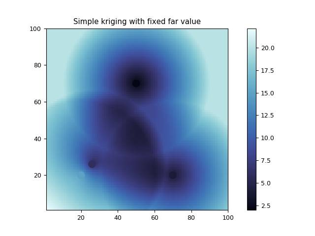

3.5.6.30. test_regrid_kriging_simple_farvalue.py – Test class SimpleCloudkriger() with farvalue keyword¶

"""Test class :func:`~vacumm.misc.grid.kriging.SimpleCloudkriger` with farvalue keyword"""
from vcmq import SimpleCloudKriger, N, P, variogram_model, code_file_name
# Kriging params
sill = 9.
range = 40
farvalue = 20
# Input
xi = [20., 26., 50., 70]
yi = [20, 26., 70., 20]
zi = [15., 6., 2., 4.]
# Output positions
nx = ny = 101
xg = N.linspace(1, 100, 101)
yg = N.linspace(1, 100, 101)
# Some inits
xi = N.array(xi)
yi = N.array(yi)
zi = N.array(zi)
xxg, yyg = N.meshgrid(xg, yg)
xo = xxg.ravel()
yo = yyg.ravel()
vgm = variogram_model('linear', n=0, s=sill, r=range)
# Setup the kriger
sck = SimpleCloudKriger(xi, yi, zi, vgf=vgm, farvalue=farvalue)
# Interpolate
zo = sck(xo, yo)
# Check a far value
zzg = zo.reshape(ny, nx)
N.testing.assert_allclose(zzg[-1, -1],farvalue)
# Plot
vmin = min(zi.min(), zo.min())
vmax = max(zi.max(), zo.max(), farvalue)
cmap = 'cmocean_ice'
kw = dict(vmin=vmin, vmax=vmax)
P.pcolormesh(xxg, yyg, zzg, cmap=cmap, **kw)
P.colorbar()
P.scatter(xi, yi, c=zi, s=100, cmap=cmap, **kw)
P.axis('image')
P.title('Simple kriging with fixed far value')
P.savefig(code_file_name(ext='.png'))
P.show()
P.close()